北極の海ゾーン
～オーロラの国の生命～
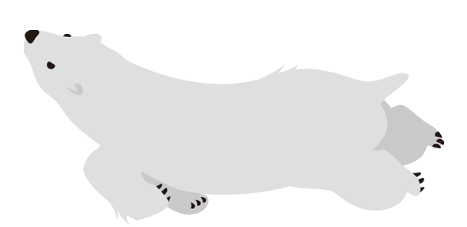

ホッキョクグマをはじめとする、寒い海にすむどうぶつたちをご覧いただけるエリアです。
アザラシやセイウチのショーも行われています。
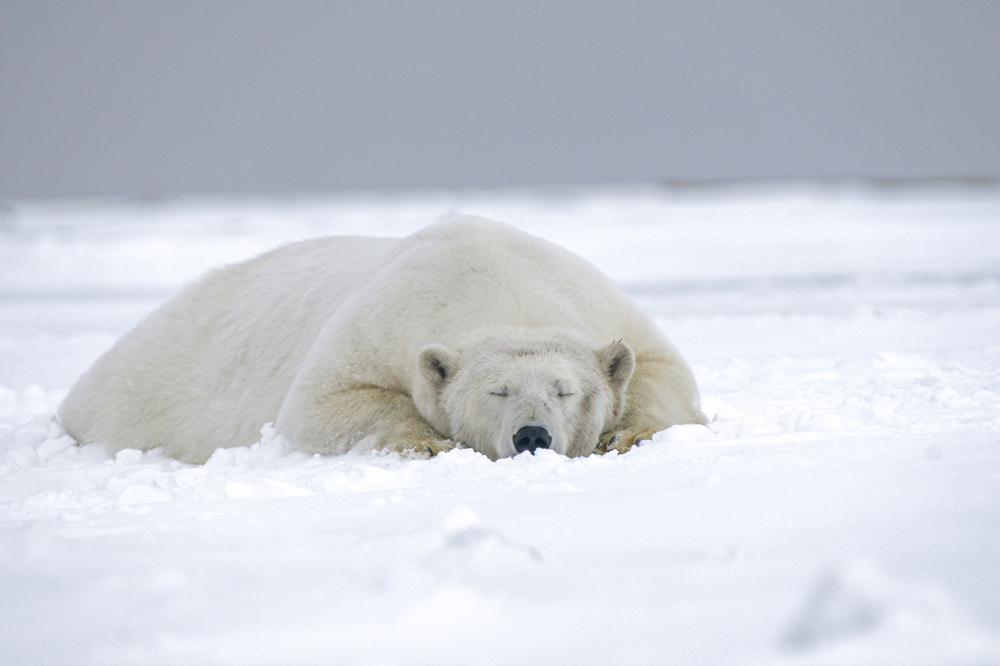
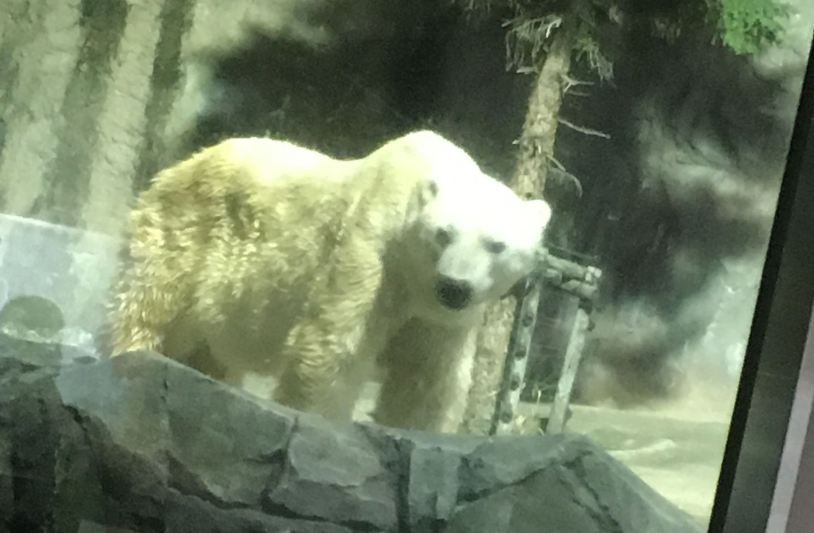
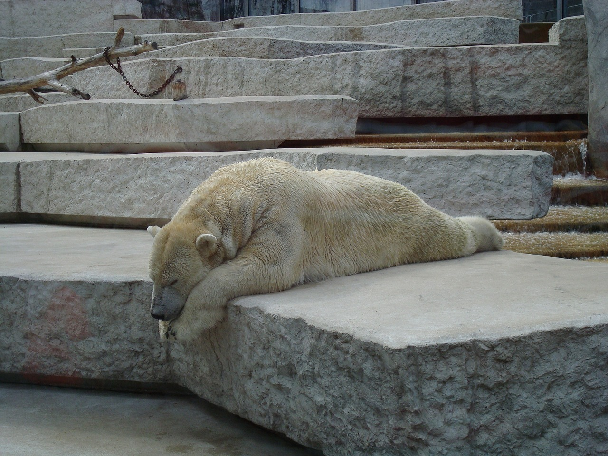


ホッキョクグマ
大迫力ダイブ！
しろくま氷山
ホッキョクグマが暮らす氷山をイメージした飼育展示スペースです。
大きなプールも設けられており、運が良ければダイナミックなホッキョクグマのダイブがみられるかも！？
北極さながらの躍動感ある姿をぜひご覧ください。

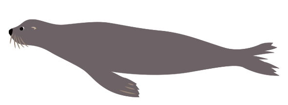
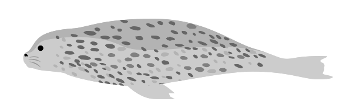
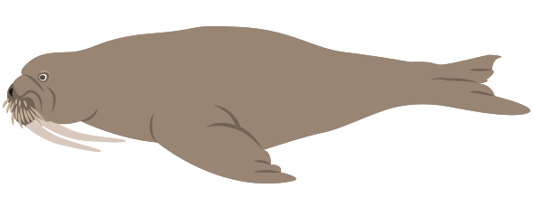
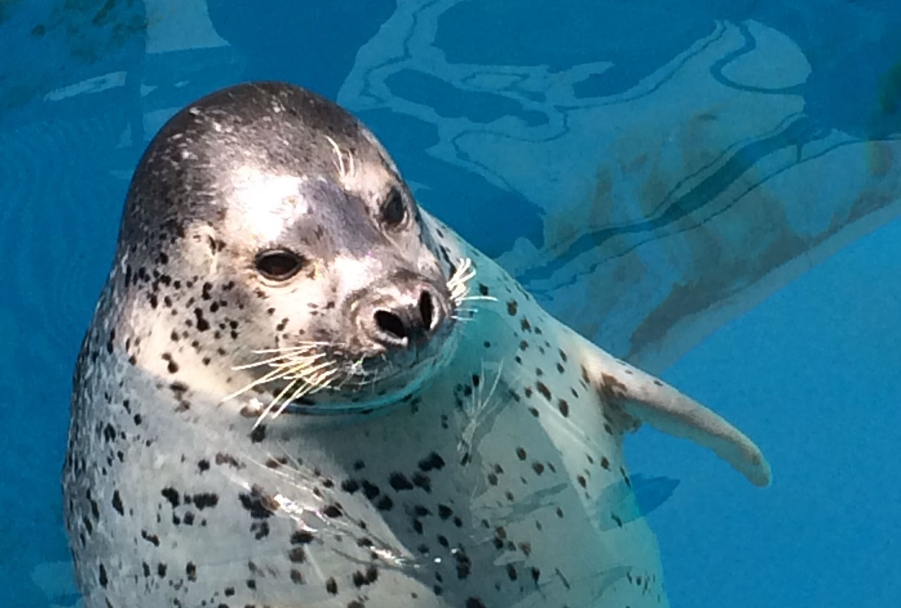
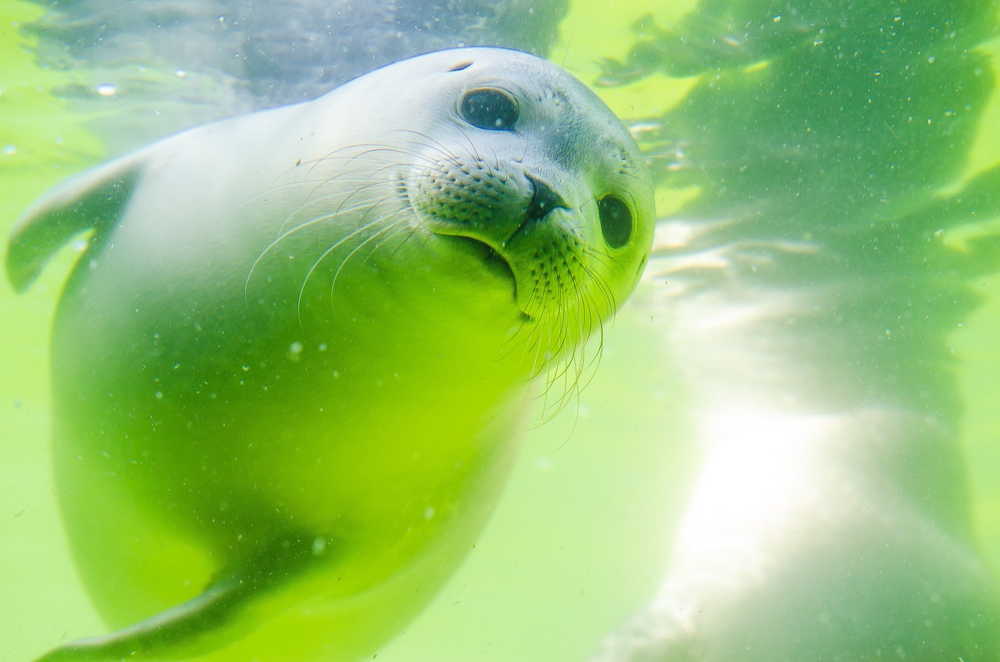
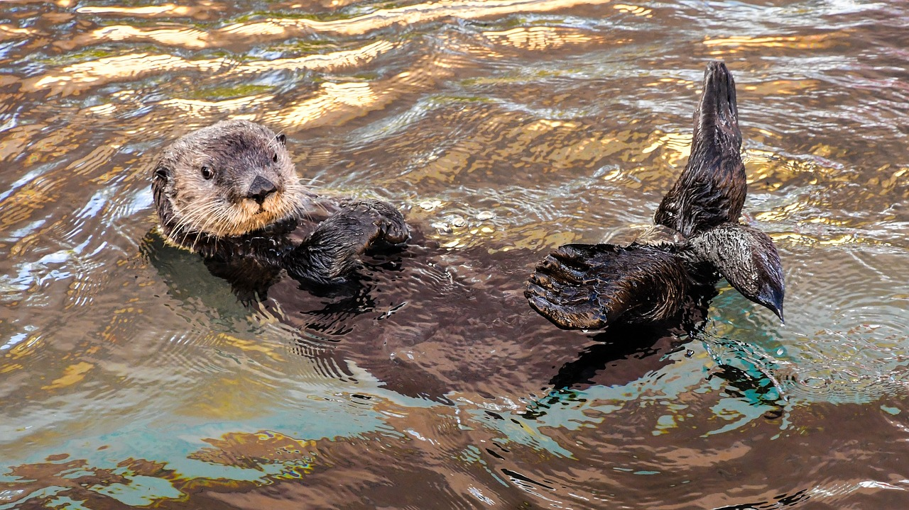
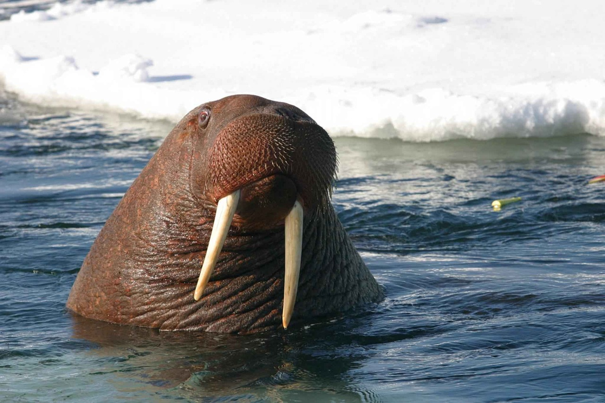
全国有数の
広さ＆飼育頭数！
海獣たちの浜辺
東京ドーム１個分の敷地を使った飼育場に、アザラシ・セイウチ・ラッコなど、たくさんの寒い海の海獣たちが暮らしています。
その飼育頭数は国内トップクラス。
またアザラシやセイウチ・アシカのショーも絶賛開催中！